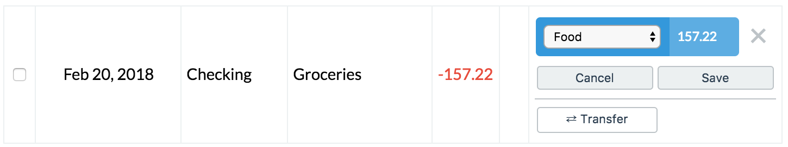
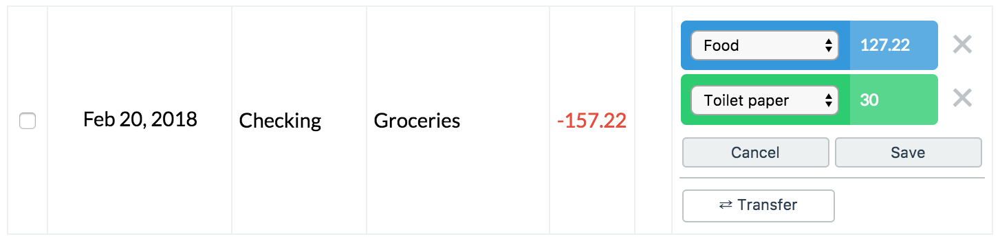

Categorizing
Every real life transaction for your accounts should cause a corresponding transaction in one or more Buckets. So if you charged $1 to your credit card to buy a doughnut, you should take $1 out of your Doughnut bucket.
Also, if you don’t have one already, perhaps you should make a Doughnut bucket :)
Categorizing happens in the Transactions tab.
Simple categorizing
- Click Categorize on a transaction
- Choose a bucket from the dropdown menu.
- Click Save

This creates a transaction on the bucket for the same amount as the real life transaction.
Multiple buckets
- Click Categorize
- Choose a bucket from the dropdown menu.
- Click on the amount next to the chosen bucket, and change it.
- Choose another bucket from the dropdown menu that appears.
- Click Save

This splits the amount from the real life transaction between the chosen buckets.
Income
If a transaction is income (e.g. your paycheck), instead of categorizing it for a particular bucket, click the Income button. Doing this adds that amount to your Rain for the month.
Transfer
If you transfer money between 2 accounts, you should categorize both transactions as Transfers.
For instance, if you transfer $100 from Savings and put it into Checking, you’ll have two transactions:
- -$100 from Savings
- +$100 into Checking
Categorize both of those as Transfers and then your income won’t be artificially inflated.
Next
Read about app-wide stuff.